由于土地沙漠化是一个复杂的、渐进的和阶段性退化的过程，沙漠化过程中地表形态的演变、生态系统结构与功能的劣变、物质流与能量流的迁移、土地生产潜力的衰退等，均表现为阶段性、系统性的演变。依据生态基准面的概念，按照沙漠化土地分类分级的综合性原则、主导性原则、动态性原则和实用性原则，设计了西藏高原沙漠化土地分类分级指标体系。
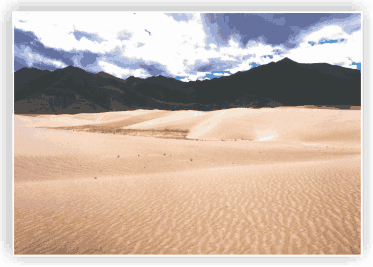 流动沙(丘)地: 地表风沙流活动普遍，沙丘广布，形成比较密集的新月形、横向、纵向、格状沙丘和爬升沙丘等形态的沙丘群，流沙面积＞50%，植被盖度＜50%，以超旱生植物为主，呈荒漠植被景观，土壤为流动风沙土，生物生产量：藏南＜4.5×104千克/平方千米，藏东＜7.5×104千克/平方千米，藏北＜3.5×104千克/平方千米。
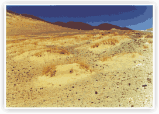 风蚀劣地: 地表风蚀强烈，形成风蚀垄岗、风蚀残丘与风蚀洼地等组合成的支离破碎的残丘地面，地表土壤腐殖层几乎全部被吹蚀，地表无植被，地面破碎度＞50%。
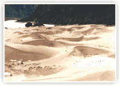 半流动沙(丘)地: 地表风沙流活动普遍，沙丘分布较广，形成比较稀疏的新月形、横向、纵向、格状沙丘和爬升沙丘等形态的沙丘群，流沙面积30%～50%，丘间地比较开阔，沙丘基部和丘间地有较多植被，盖度达5%～10%，以强旱生植物为主，呈荒漠植被景观，土壤为流动风沙土和半固定风沙土，生物生产量略大于极重度沙漠化土地。
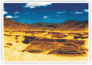 风蚀残丘: 为风蚀小丘、残丘与风蚀沟等地貌组合，地表风蚀严重，土壤腐殖层损失量＞70%，地表基本无植被，地面破碎度达30%～50%。
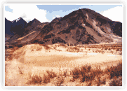 半固定沙(丘)地: 地表风沙流活动较普遍，土壤腐殖层损失量＞50%，沙丘呈斑块状或零星分布，多为半固定沙丘、沙垄与半固定爬升沙丘，流沙面积10%～30%，植被盖度10%～30%，以旱生或强旱生植物为主，呈荒漠或荒漠化草原景观，土壤为半固定风沙土，生物生产量：藏南4.5×104～7.5×104千克/平方千米，藏东7.5×104～1.5×104千克/平方千米，藏北3.5×104～6.0×104千克/平方千米。
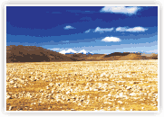 裸露沙砾地: 地表风蚀粗化，布满粗沙砾石，砾石含量＞10%，为植被盖度＜10%的沙砾地，可出现灌草丛沙堆和局部积沙，呈戈壁景观。
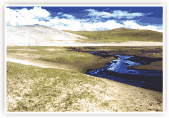 固定沙(丘)地: 地表风蚀痕迹明显，有风沙流活动，土壤腐殖层损失量30%～50%，沙丘呈斑块状或零星分布，为固定沙丘、沙垄与固定爬升沙丘，有风蚀坑和局部积沙，流沙面积5%～10%，植被盖度30%～50%，以旱生和旱中生植物为主，呈草原或荒漠化草原景观，土壤为风沙土。
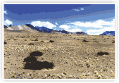 半裸露沙砾地: 地表风蚀粗化，砾石含量＞10%，为灌草覆盖度10%～30%的沙砾地，有灌草丛沙堆分布，呈现荒漠化草原景观，景观具有季节变异性。
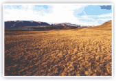 风蚀耕地、草地: 地表有风蚀痕迹，细粒物质被吹蚀，表土沙化，出现有风蚀细沟、切沟，或有斑点状流沙或小型沙丘的耕地、草地。
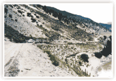 工程治沙地: 以非生物工程措施治理的固定、半固定、流动、半流动沙丘或平沙地。
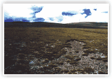 退化草地、沙质耕地: 具有沙漠化发生的潜在因素和条件，土壤层及以下由沙壤土构成，但目前尚未沙化的沙质、沙砾草地、沙质耕地，又称为露地。
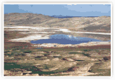 干涸湖盆地: 湖泊退缩、干涸，表土为松散沉积物。具有少雨年干涸、多雨年汇水的年际变异性特点。